Умное кольцо · Башня Останкино и крыша «Лужники»
Версия 2, по Креативному ТЗ Лео 26.11 и созвону. Видео закольцованы, без звука.
Башня Останкино · 30 с · 3 версии по ТТ
1 · как есть
2 · нарастание яркости с нуля, 5 с
3 · спад яркости до нуля, 5 с
Лист кадров (каждые 0,5 с)
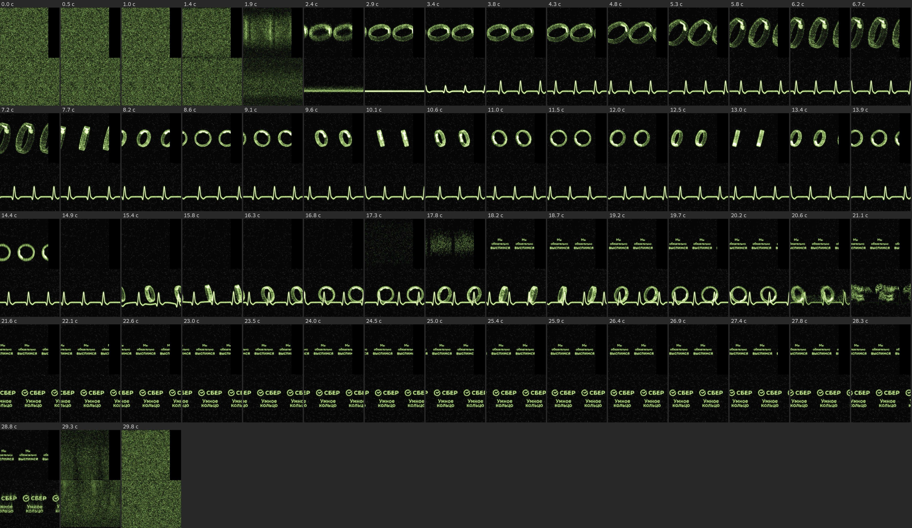
Крыша «Лужники» · 20 с · 2 варианта по ТЗ
Вариант 1 · чёрный фон
Вариант 2 · белый фон
Листы кадров (каждые 0,5 с)
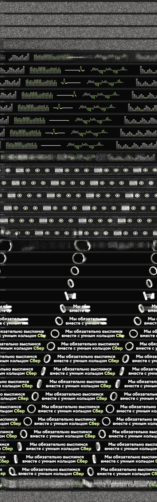
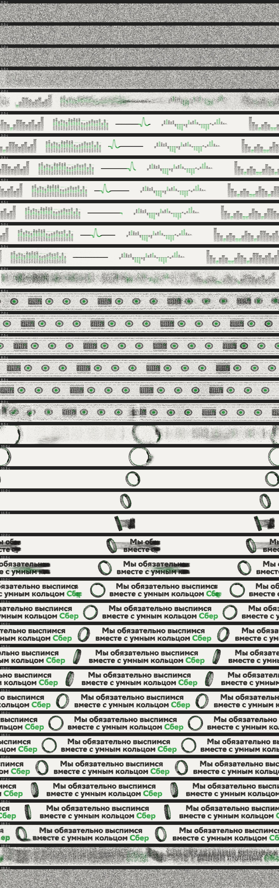
Сверка с ТЗ 37/39
| № | Блок | Требование | Факт | Кадр | |
|---|---|---|---|---|---|
| 1 | Крыша | ТТ: 2416×162 | ✓ | 2416×162 (ffprobe) | |
| 2 | Крыша | ТТ: MP4 h264, 20–25 fps | ✓ | h264, 25 fps | |
| 3 | Крыша | ТТ: битрейт до 10 Мбит/с | ✓ | 8,2 / 8,3 Мбит/с | |
| 4 | Крыша | ТТ: без звука | ✓ | аудиодорожки нет | |
| 5 | Крыша | ТТ: левый и правый край стыкуются бесшовно | ✓ | шов 1,25–1,26 (≈1 = шва нет), стык цикла как соседние кадры | |
| 6 | Крыша | ТТ: бегущая строка справа налево, полный проезд 20 с | ✓ | вся лента едет справа налево, 1 оборот за 20 с | 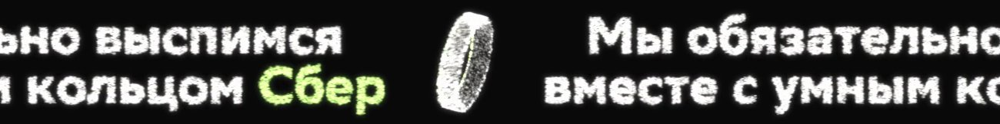 |
| 7 | Крыша | ТЗ: максимально ярко и контрастно, чёткие силуэты | ✓ | фон почти чёрный, тёплый белый + зелёный | |
| 8 | Крыша | ТЗ: только крупные надписи, шрифт жирный и широкий | ✓ | SB Sans Display Bold, 2 строки на всю высоту | |
| 9 | Крыша | ТЗ: не ставить текст поверх графики | ✓ | лайн на чистом фоне, графики до него | 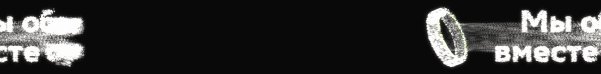 |
| 10 | Крыша | ТЗ: визуал кольца (Figma) | ✓ | корпус, 2 таблетки-сенсора, чип, кромка — из точек | 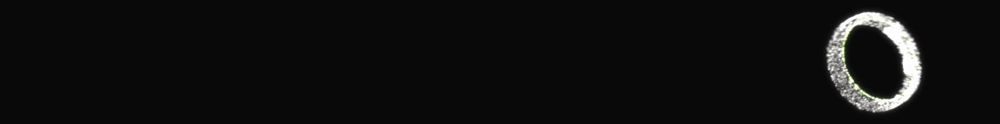 |
| 11 | Крыша | ТЗ: графика приложения | ✓ | гипнограмма, ночи столбиками, пульс, температура ± | 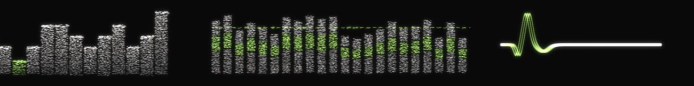 |
| 12 | Крыша | ТЗ: вариант 1 — чёрный фон, белый и зелёный | ✓ | Krysha_Luzhniki_v2_1_chernyy | |
| 13 | Крыша | ТЗ: вариант 2 — белый фон, чёрный и зелёный | ✓ | Krysha_Luzhniki_v2_2_belyy (графит + #21A038) | 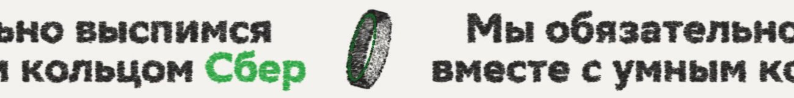 |
| 14 | Крыша | Сценарий 1: биометрия и график, пульс малым участком и жирно | ✓ | 0–5 с, пульс — один участок, 3 струны | |
| 15 | Крыша | Сценарий 2: кольцо, облёт от большого (видны элементы чипа) до малого в размер экрана | ✓ | 5,3–10,8 с: внутренность с чипами → кольцо уменьшается до высоты ленты и крутится | 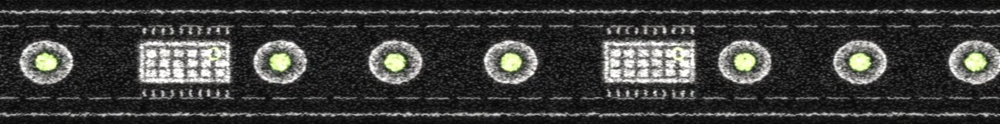 |
| 16 | Крыша | Сценарий 3: за кольцом лайн «…вместе с умным кольцом Сбер» | ✓ | лайн выезжает из-за кольца с 10,8 с | |
| 17 | Крыша | Созвон: лайн 2–3 раза по кругу | ✓ | 2 копии по обхвату | |
| 18 | Крыша | Созвон: «Береги себя» убрать | ✓ | нет | |
| 19 | Крыша | ТЗ: адаптация яркости для дня и вечера | ⚠ | дневной — вариант 2 на белом; отдельной дневной версии нет | |
| 20 | Башня | ТТ: файл 532×880, верх 432×450 в (0,0), низ 532×430 в (0,450) | ✓ | правые 100 px верха пустые | 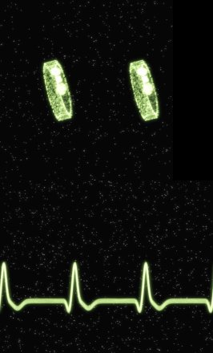 |
| 21 | Башня | ТТ: формат avi/mov/mp4 | ✓ | mp4 h264 | |
| 22 | Башня | ТТ: 3 типа ролика — как есть / нарастание яркости с нуля / спад до нуля | ✓ | v2_1, v2_2, v2_3; нарастание и спад по 5 с | |
| 23 | Башня | ТТ: бегущее только справа налево | ✓ | 2 оборота за 30 с справа налево | |
| 24 | Башня | ТТ: видно ~40 % ширины — каждое окно читается | ✓ | надписи по 2 копии шириной в окно: верх 172, низ 212 px | 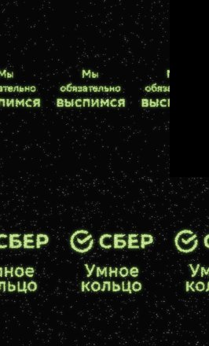 |
| 25 | Башня | ТТ: края стыкуются | ✓ | шов: верх 1,08, низ 1,09 | |
| 26 | Башня | ТЗ: вариант 1 — зелёный на чёрном | ✓ | элементы зелёные, фон чёрный с белыми точками | 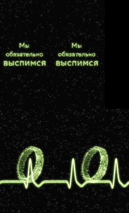 |
| 27 | Башня | Сценарий 1: 0 с — зелёный шум | ✓ | 0–1 с, финал в тот же шум (петля) | 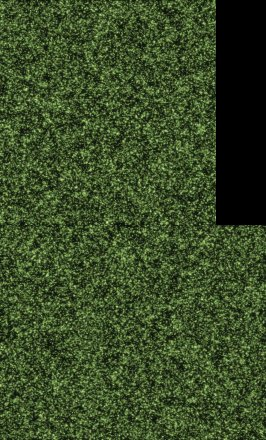 |
| 28 | Башня | Сценарий 2: точки собираются в зелёные элементы, фон чёрный с белыми точками; элементы жирнее | ✓ | 1–2,6 с | 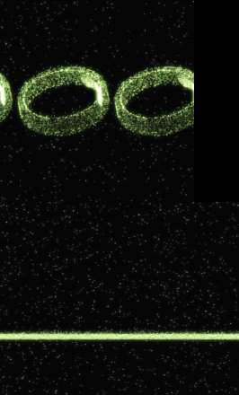 |
| 29 | Башня | Сценарий 3: нижний экран — зелёный график с 3 с, крупнее | ✓ | пульс 7 струн, амплитуда 92 px | 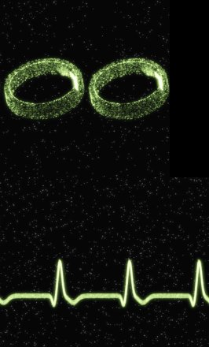 |
| 30 | Башня | Сценарий 3: верх — кольцо-продукт с элементами чипа, облёт крупно 1–7 с | ✓ | взгляд внутрь (таблетки, чип) → 3/4 сбоку | 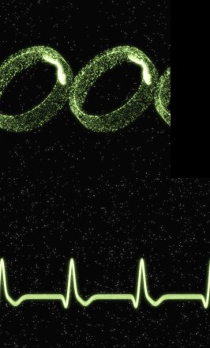 |
| 31 | Башня | Сценарий 3: малое кольцо 7–14 с | ✓ | кольцо уменьшается и крутится | |
| 32 | Башня | Сценарий 4: 14 с кольцо падает на график, реагирует, отпружинивает | ✓ | падение 14,0 с, удар ~15,2 с, линия пружинит | 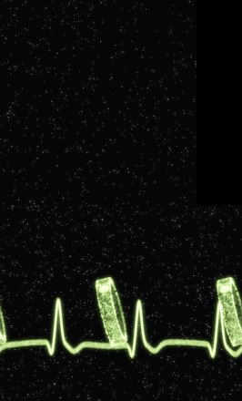 |
| 33 | Башня | Сценарий 5: 18 с вверху «Мы обязательно выспимся», «выспимся» крупно, 2–3 строки | ✓ | 3 строки, читается с 18 с | |
| 34 | Башня | Сценарий 5: 20 с внизу пэкшот «СБЕР Умное кольцо», крупнее | ✓ | лого + «Умное / кольцо» | |
| 35 | Башня | Сценарий 6: с 29 с уход в шум | ✓ | с 28,6 с, к 30 с полный шум | 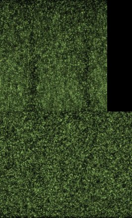 |
| 36 | Кольцо | Лео 25.11: кольцо не гладкое внутри, с чипами; чипы правдоподобно | ✓ | чип с контактными площадками между сенсорами | |
| 37 | Кольцо | Лео 25.11: «не контур, а две таблеточки» | ✓ | сенсоры — сплошные купола | |
| 38 | Кольцо | Лео 26.11: кольцо полностью из точек, структура просвечивает | ✓ | корпус, прозрачный слой, сенсоры — всё точками | |
| 39 | Октябрь | Лео 26.11: «люди поменялись — вернуть композицию» | — | Октябрь на стопе и заморожен — вопрос Д1 №7 |